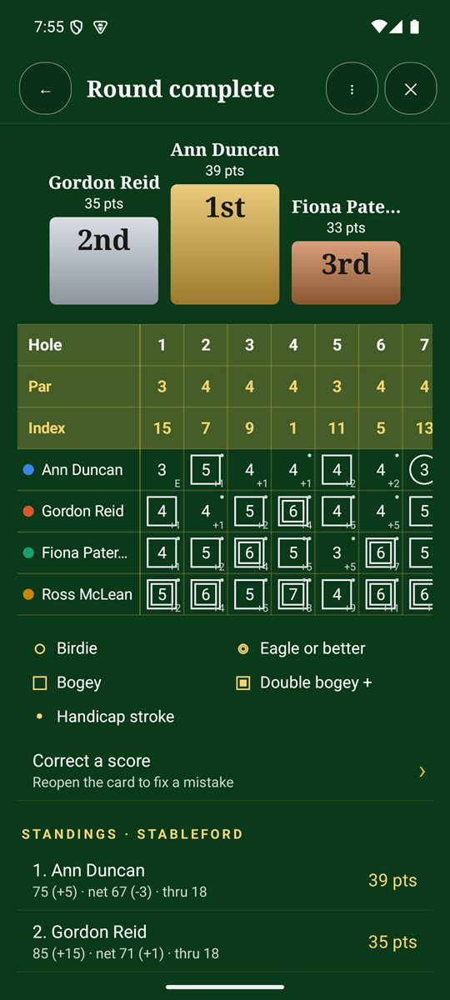
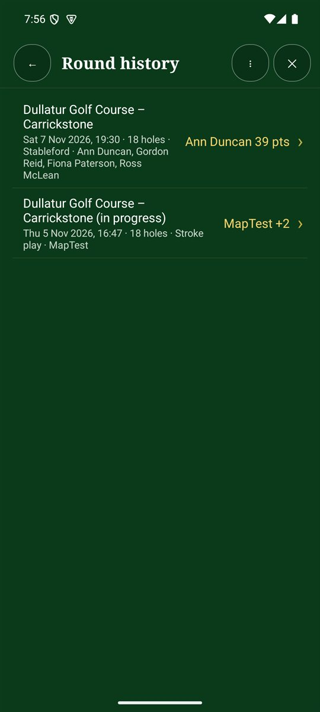

When the round is complete
When you finish a round, the app shows:
- Who won in your format, plus side games such as skins.
- Each player's best and worst hole.
- A medal stand for first, second and third, and the full scorecard.
- Share the card as a picture: the medal stand and full card in one image, for WhatsApp or social media.
- Share the result: who won and the standings, by WhatsApp, text or email.

Round history
- On the Scorecard+ menu, tap Round history. The number beside it is how many rounds you've saved.
- Each round shows the course, date, format, players and the winner.
- Tap a round to open its full card, standings, stats and awards. An unfinished round shows (in progress), and you can carry on with it.

Awards
The app also hands out fun awards, such as Birdie machine, Par collector, Shot of the day, Hot putter and Skins king. A hole in one gets its own award (drinks are on them).
Correcting or deleting a round
- Correct a score: reopen the card to fix a mistake.
- Delete this round: removes the round and all its scores. The app asks twice. Any copy already saved in Downloads is kept.